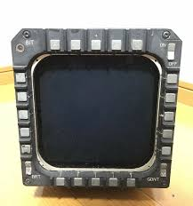

YF-23

MFD - są to małe ekrany LCD lub CRT otoczone konfigurowalnymi przyciskami,
które mogą posłużyć do wyświetlania informacji użytkownikowi na wiele możliwych sposobów.
Po raz pierwszy wyświetlacze typu MFD miały zastosowanie tylko w lotnictwie wojskowym,
natomiast później zostały zaadoptowane do m.in. lotnictwa cywilnego.